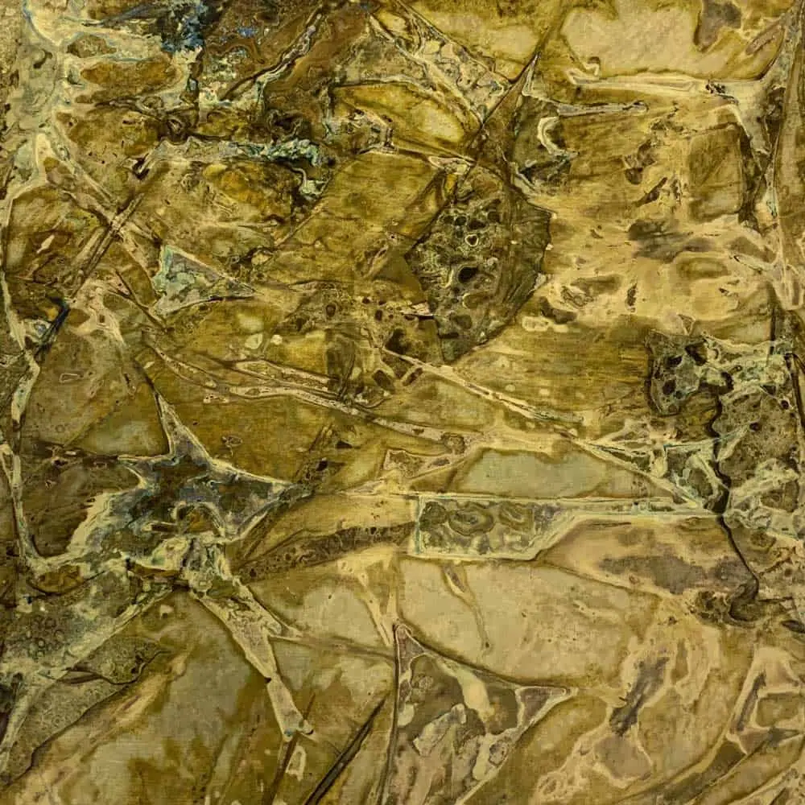

You can often see brass letters spelling out business names in offices, on the front or in the lobby of hotels, sealed into stone or something else entirely. They add a definite touch of class wherever you see them!
Available in natural brass or aged brass , letters can be laser cut to any size and be provided in any font or configuration you choose. Just tell us the intended use and we can provide suggestions if required.
Contact the Halman Thompson team for a personalised brass letter quotation.

Cut to size
Each of our bespoke finishes can be purchased in sheets cut to your size, perfect for your project.
- Pricing includes delivery and turnaround time is just 5-8 weeks
- Each piece is coated in a gloss finish lacquer that prevents the sheet from further aging

Ready to go
We can provide bespoke cut metal with each of our finishes being wrapped around wood and lacquer finished. Please get in touch for a bespoke quote .
Brass letter finishes
You can have your brass letters in one of four beautiful finishes.
- Somerset finish – An almost geological aged brass finish with varying depths of colour and texture
- Wiltshire finish – Light, relaxed aged brass effect with a dappled patina that could look good anywhere
- Cambridgeshire finish – Darker grained-effect aged brass with a lovely reflective quality
- Natural brass finish – Engaging natural brass finish with wide appeal that could work almost anywhere
BESPOKE BRASS LETTERS & NUMBERS
All brass letters from Halman Thompson are made by hand to order.
Your brass letters will be laser cut to your desired font, shape and size before being finished off so they are ready to use.
Our team of skilled artisans will age your brass letters so they deliver your desired look and then seal them in tough clear lacquer. The lacquer stops the ageing process and protects the letters to keep them looking their best.
Spell out your address, your business name, your brand, your motto or anything you like and have it stand proud on any surface.
SIZING
Letters can be cut to any size, very small to very large, up to a maximum of 1000mm X 2000mm per letter in any font or character. The letters and numbers are laser cut bespoke for your project so you can get any size you require.
THE PRACTICALITY OF BRASS LETTERS
Installation is very straightforward.
If you’re wall mounting your brass letters, simply prepare the surface and use epoxy or adhesive to secure it in place. Offer them up, adjust until perfect and allow them to set. That’s it!
You can also use fixings to make them stand out. We can advise if required.
Caring for your brass letters is just as easy. Use warm soapy water and a soft cloth to keep them looking amazing. Avoid using abrasives to protect the finish and your letters should look good forever.
Full installation and care instructions are provided with every brass letter order.
Contact Halman Thompson for a free, bespoke quotation or to discuss your needs.


If you can dream it, we’ll make it.
Bars, balustrades, staircases, worktops, cladding and pieces that don’t have a name yet. Our designers and craftspeople work in brass, copper, zinc and steel, and alongside wood.